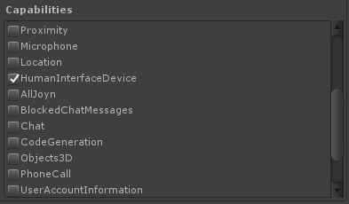

Special Platform Support
Platforms:
Windows 8 Store
To build for the Windows 8 Store, you must install Windows 8 Store support. In order to build for this platform, you must be using the Windows Unity editor.
Install Windows App Store platform support through the menu:
Window -> Rewired -> Setup -> Install Platform Support -> Windows 8 Store
IMPORTANT NOTE FOR UNITY 5 USERS:
The following applies ONLY if you have moved the Rewired folder from its default location. If you have not moved the Rewired folder, skip this section and do not make any changes to any DLLs.
Unity 5 requires that a Placeholder path be set in the Plugins/Metro/Win80/Rewired_Core.dll and Plugins/Metro/Win81/Rewired_Core.dll inpspectors or you will get compilation errors when you try to compile. If you move Rewired from its default install location, you must set this path to the current location of the main Rewired_Core.dll in your project. If you move the Rewired folder to another directory, this path will have to be changed manually because Unity stores a path here instead of a GUID. Do not make any changes to any DLL unless you have moved Rewired out of its default location.
Here are the steps:
- Select Plugins/Metro/Win80/Rewired_Core.dll in the project view.
- In the inspector, click the Placeholder field and navigate to Assets/Rewired/Internal/Libraries/Runtime/Rewired_Core.dll.
- Click Apply.
- Do the same for Plugins/Metro/Win81/Rewired_Core.dll.
This is not automated because users tend to move Rewired around into various folders in the project. Because Unity chose to store a path here instead of a GUID, the link will break each time the Rewired folder is moved.
Controller Support
Only the XBox 360 Controller and other XInput-compatible controllers will work on the Windows 8.0 Store platform. On Windows 8.1 Store platform, many more controllers are supported. Please see Supported Controllers for details.
Windows 8.1 Universal target build issue (Applies only to version of Unity before 5.3.4p2):
In versions of Unity prior to 5.3.4p2, the Unity Editor has a bug that does not allow designating a DLL to be included only for the Windows 8.1 Universal build target. Because of this bug, it is impossible for Rewired to "just work" on Windows 8.1 Universal builds. In order to build to Windows 8.1 Universal, you will have to manually set the WSA target SDK in the inspector to "Any SDK" on both of the following DLL:
- Plugins/Metro/Win81/Rewired_Core.dll
If you do not set the WSA SDK target to "Any SDK", Windows 8.1 Universal builds will always fail.
If you are also going to build to Windows 10 Universal (UWP), you must first set the above DLLs back to SDK81 or disable WSA on the DLLs entirely. If you do not, these Windows 8 DLLs will be included when building to Windows 10 Universal (UWP) and the build will fail.
This bug was reported to Unity and fixed in 5.3.4p2. There is no automatic workaround at the present time.
The major cause of concern for this bug is that Windows Phone 8 cannot use some of the libraries called in Rewired_Windows8Store.dll. This DLL contains calls to XInput, which will cause the Windows Phone 8 build to fail to pass validation. The only possible workaround for this in versions of Unity prior to 5.3.4p2 is to delete the REwired_Windows8Store.dll forcing Rewired to fall back to UnityEngine.Input. This is the only way to build a Windows 8.1 Universal build that will pass validation in versions of Unity prior to 5.3.4p2.
Unity 5.4.0 Windows 8.1 Universal Build Issue:
The above problem was fixed in 5.3.4p2, but Unity 5.4.0 introduced a new bug. In 5.4.0, when you build a Windows 8.1 Universal project, the solution Unity generates has broken references to Rewired_Core.dll and Rewired_Windows8Store.dll. The DLLs are properly copied into the solution, but the references in both the Windows 8.1 and the Windows 8.1 Phone projects are broken. The solution is to delete the references and link them yourself to the ones copied to the solution. The locations are as follows:
Windows 8.1 project:
MainFolder\Project_Name\Project_Name.Windows\Plugins\SDK81\
Windows 8.1 Phone project:
MainFolder\Project_Name\Project_Name.WindowsPhone\Plugins\PhoneSDK81\
In order to enable support for HID joysticks, after building the project in Unity, open the new Windows 8.1 Store project in Visual Studio and edit the Package.appxmanifest file with the XML text editor and add the following lines:
<Capabilities>
<m2:DeviceCapability Name="humaninterfacedevice">
<m2:Device Id="any">
<m2:Function Type="usage:0001 0004" />
</m2:Device>
<m2:Device Id="any">
<m2:Function Type="usage:0001 0005" />
</m2:Device>
</m2:DeviceCapability>
</Capabilities>
The <Capabilities> tag and its contents must be placed between the <Package> and </Package> tags. This gives the app permission to read HID joysticks and gamepads. If you do not add this or do not add it correctly, HID joysticks will not work. However, the XBox 360 Controller and other XInput-compatible controllers will still function. There is also an option in the Unity Windows Store Player options to enable this: -> Publishing Settings-> Capabilities -> Human Interface Device. You can use this to enable this feature without editing the manifest manually, however this option is not available in all versions of Unity.
Windows 10 Universal
Windows 10 Universal support requires Unity 5.2+
CRITICAL WARNING: There is a known issue with Unity on both .NET and IL2CPP builds in Unity 2018.2.0 - 2018.2.18 that causes the application to crash when a gamepad is disconnected. It is recommended you update to a version of Unity of 2018.2.19 or greater. See this form more information.
Installation:
To build for the Windows 10 Universal platform, you must install Windows 10 Universal support. In order to build for this platform, you must be using the Windows Unity editor.
Install Windows 10 Universal platform support through the menu:
Window -> Rewired -> Setup -> Install Platform Support -> Windows 10 Universal
IMPORTANT NOTE:
The following applies ONLY if you have moved the Rewired folder from its default location. If you have not moved the Rewired folder, skip this section and do not make any changes to any DLLs.
Unity 5+ requires that a Placeholder path be set in the Rewired/Internal/Libraries/Runtime/UWP/Rewired_Core.dll and/or Rewired/Internal/Libraries/Runtime/UWP/IL2CPP/Rewired_Core.dll (depending on your scripting backend) inpspector or you will get compilation errors when you try to compile. If you move Rewired from its default install location, you must set this path to the current location of the main Rewired_Core.dll in your project. If you move the Rewired folder to another directory, this path will have to be changed manually because Unity stores a path here instead of a GUID. Do not make any changes to any DLL unless you have moved Rewired out of its default location.
Here are the steps:
- Rewired/Internal/Libraries/Runtime/UWP/Rewired_Core.dll and/or Rewired/Internal/Libraries/Runtime/UWP/IL2CPP/Rewired_Core.dll in the project view (select and change one at a time).
- In the inspector, click the Placeholder field and navigate to Assets/Rewired/Internal/Libraries/Runtime/Rewired_Core.dll.
- Click Apply.
This is not automated because users tend to move Rewired around into various folders in the project. Because Unity chose to store a path here instead of a GUID, the link will break each time the Rewired folder is moved.
In Unity 5.6+, you can enable HID device support through the Unity Build Player settings:
Build Settings -> Player Settings -> Publishing Settings -> Capabilities -> HumanInterfaceDevice

While this option was available in older versions of Unity, it did not enable both HID usages 4 and 5 causing some gamepads not to appear to the system.
For older versions of Unity, in order to enable support for HID joysticks, after building the project in Unity, open the new Windows 10 Universal project in Visual Studio and edit the Package.appxmanifest file with the XML text editor and add the following lines:
<Capabilities>
<DeviceCapability Name="humaninterfacedevice">
<Device Id="any">
<Function Type="usage:0001 0004" />
<Function Type="usage:0001 0005" />
</Device>
</DeviceCapability>
</Capabilities>
The <Capabilities> tag and its contents must be placed between the <Package> and </Package> tags. This gives the app permission to read HID joysticks and gamepads. If you do not add this or do not add it correctly, HID joysticks will not work. However, the XBox 360 Controller and other XInput-compatible controllers will still function.
*IMPORTANT*: It is recommended that you do not enable HID joystick support in UWP due to an oversight by Microsoft that will cause some devices to show up twice if enabled. See this for more information. If you need support for non-gamepad devices like flight controllers, racing wheels, or want support for a wider range of gamepads including older gamepads and Android gamepads, it is recommended that you disable XInput support and only use HID device support. However, note that disabling XInput support will disable support for gamepad vibration. Warning: Disabling XInput support will also cause the application to crash when an Xbox One S controller is unplugged.
WARNING: There is a known issue with Unity in IL2CPP builds when enabling support for HID joysticks. See this for more information.
Error On DLL Import
Unity reports this error every time the Rewired_Core.dll for Windows 10 Universal .NET is imported or reimported into the project:
System.Reflection.TargetInvocationException: Exception has been thrown by the target of an invocation. ---> Mono.Cecil.AssemblyResolutionException: Failed to resolve assembly: 'System.Runtime, Version=4.0.20.0, Culture=neutral, PublicKeyToken=b03f5f7f11d50a3a'
Ignore this error. There is no reason for this error and no way to silence it. It has no effect on the functionality of the library.
OUYA
To build for the OUYA platform you must first install the OUYA Everwhere SDK Unity plugin. This can be obtained from the OUYA Developer site here.
For help installing and configuring OUYA support for Unity in general, see the docs:
OUYA plugin documentation
Building to Ouya
To build for the Ouya platform, you must do the following:
- Follow the OUYA plugin documentation to set up the Unity environment for Ouya support.
- Switch the Unity editor build target to Android.
- Ensure that "Build to Ouya" is checked in the Rewired Global Options window which can be found at:
Window -> Rewired -> Global Options - Place OuyaGameObject prefab from the OUYA SDK in your scene as mentioned in the OUYA plugin documentation.
- Build through the standard Unity build panel.
For questions about supported controllers on Ouya, see here.
Using Razer Forge TV with Ouya Everywhere SDK
To enable Ouya Everywhere SDK on the Razer Forge TV, follow the above steps and additionally check the "Use Ouya SDK on Razer Forge TV" option in the Rewired Global Options window.
XBox One
Rewired includes special support for XBox One for better controller support and more accurate hot-plugging behavior. Rewired supports gamepad vibration on XBox One, however you must first install the prerequisite Xbox One native library provided by Unity.
If you receive an error when switching to the Xbox One build target in Unity, make sure the Xbox One platform is checked on the Rewired_Core.dll import options.
Dependencies
Xbox One support requires that you install the following native library provided by Unity in the Plugins/XboxOne folder in your project:
- Gamepad.dll
To get the library, go to:
Unity Xbox Forums > Unity for Xbox One Downloads (Sticky Topic) > Under the "Plugins" section
The file Gamepad.dll can be found in Binaries\Native\Variations\Durango_Release in the plugins package.
If this dependiency is not installed correctly, XBox One builds will not function. You will only see black screen when launching the build on the Xbox One if the library is not installed.
Crashes on Start
This is always due to improper set up of the dependency noted above. If Gamepad.dll is not found, not in the proper location, or does not have the proper inspector settings to enable it to be included with the XBox One build, all p/invoke calls to Gamepad.dll will fail, which crashes the XBox One rather than throwing an exception which can be caught and handled as happens on all other platforms. If the version of Gamepad.dll you are using does not have the exact method signature Rewired expects, it will also crash. If you upgrade Unity versions but do not update the Gamepad.dll also, it may also crash if the gamepad.dll has been built to a different version of the Xbox One SDK.
If for any reason you cannot get the Gamepad.dll, you can disable all calls to the DLL by setting "Xbox One: Disable Vibration" in the Rewired Global Options window which can be found at: Window -> Rewired -> Global Options. This will disable support for gamepad vibration.
Accessing XBox One Controller Features
Special controller features of the XBox One gamepad such as vibration can be accessed via the XboxOneGamepadExtension class available in the Joystick class as seen in this example.
Troubleshooting
See Troubleshooting - Xbox One for solutions to issues on the Xbox One platform.
PlayStation 4
Rewired includes special support for Playstation 4 for better controller support.
Accessing PS4 Controller Features
Special controller features of the PS4 gamepad can be accessed via the PS4GamepadExtension class available in the Joystick class as seen in this example.
Special controller features of the PS4 Aim Controller can be accessed via the PS4AimExtension class available in the Joystick class as seen in this example.
Troubleshooting
See Troubleshooting - PlayStation 4 for solutions to issues on the PS4 platform.
Nintendo Switch
Rewired requires a separate plugin to support the Nintendo Switch platform. This plugin is only available to licensed Nintendo developers. More information can be found on the Nintendo Developer Portal.
Fill out the form on the Nintendo Developer Portal for the Rewired Nintendo Switch Plugin and wait until you receive a response by email with instructions on how to download it. Do not email support asking how to get the plugin immediately after filling out the form. The form will be processed manually after notification is received and an email will be sent to you at that time.
Stadia
Rewired requires a separate plugin to support the Stadia platform. This plugin is only available to licensed Stadia developers. Please contact your Stadia developer account manager for details on how to register for the plugin.